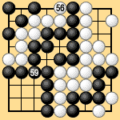
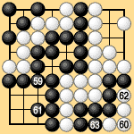
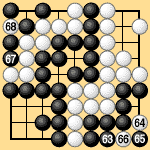
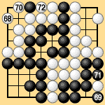

| 6.5 Bent Four in the Corner with Seki |
|---|
| In Dia. 6-9-1 there is a bent four in the bottom right corner and a seki in the top left. White cannot eliminate the ko threat in the top left. Under traditional territory rules the bent four is unconditionally dead anyway, so White wins the game. |
|  | |
|
| Under territory rules I Black 57 and White 58 pass, establishing the preliminary end. The game then continues as in Dias. 6-9-2 to 6-9-4. Black 67 makes a ko threat and Black 69 recaptures the ko. The game ends with two passes at Black 73 and White 74. Black lives in the bottom right by giving up his stones in the top left, and wins the game by one point. You can verify that Black also wins by one point under area rules III. |
|  |  |  | |
| Dia. 6-9-2 (59-63) | Dia. 6-9-3 (63-68) |
|
|---|